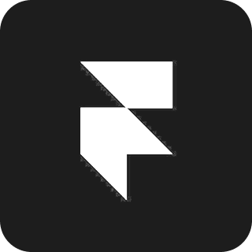
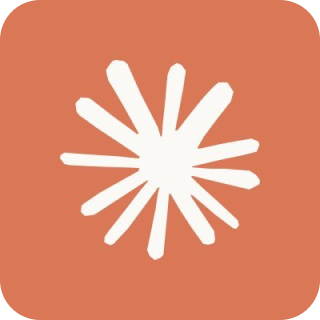
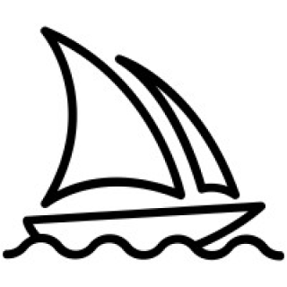
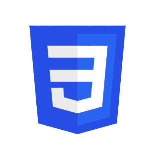

UI/UX DESIGNER
Featured Work
My Skillset
Design Skills
- UX Design
- Web Design
- UI Design
- Usability Testing
- Interaction Design
- Design Systems
- Wireframing & Prototyping
- Visual Communication
- Information Architecture
- Branding & Visual Identity
- UX Research
- AI-assisted Design
Design Tools
 Figma
Figma Adobe After Effects
Adobe After Effects Adobe Photoshop
Adobe Photoshop
Framer Adobe Illustrator
Adobe Illustrator- Procreate
AI Tools

Claude & Claude Code- ChatGPT
- Google Gemini & Nano Banana Pro
- Perplexity
- Vizcom

Midjourney
Development
- HTML (Basic)

CSS (Basic)
Soft Skills
- Cross-functional Collaboration
- Creative Thinking
- Problem-solving
- Attention to Detail
- Communication
- User Empathy
- Adaptability
- Ownership & Initiative


Hi, I’m
Savni Borde
A UX/UI designer who enjoys shaping ideas into thoughtful, human-centered experiences. My work is driven by research, interaction, storytelling and visual clarity, turning layered problems into designs that feel meaningful, usable and intentional.